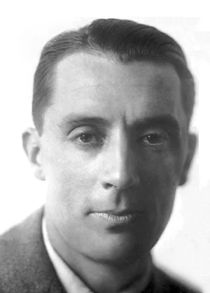
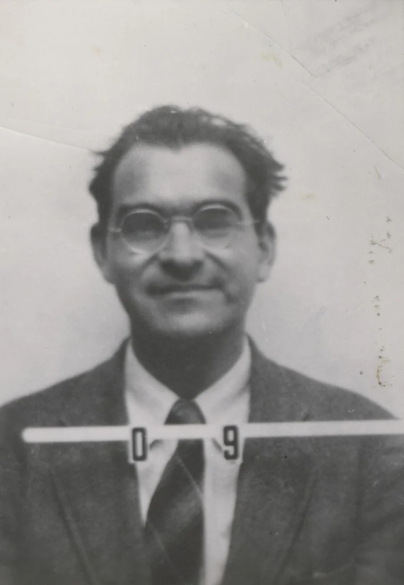
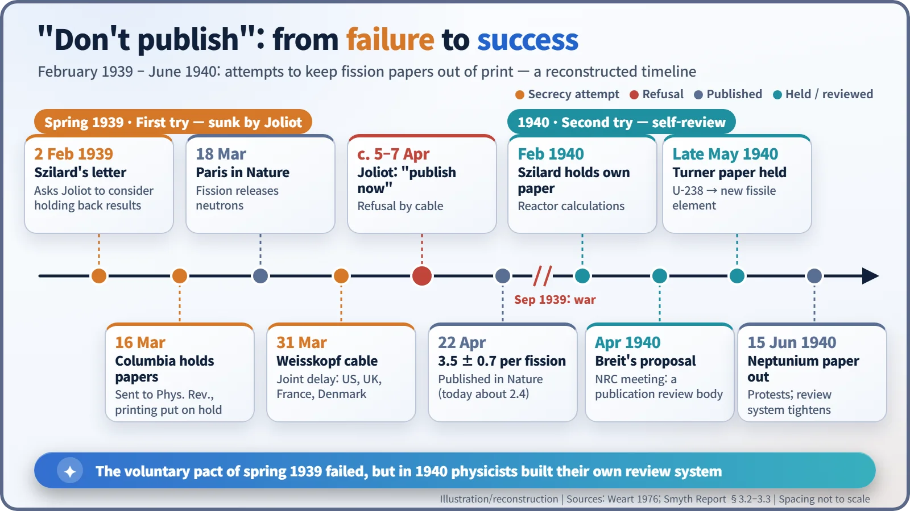
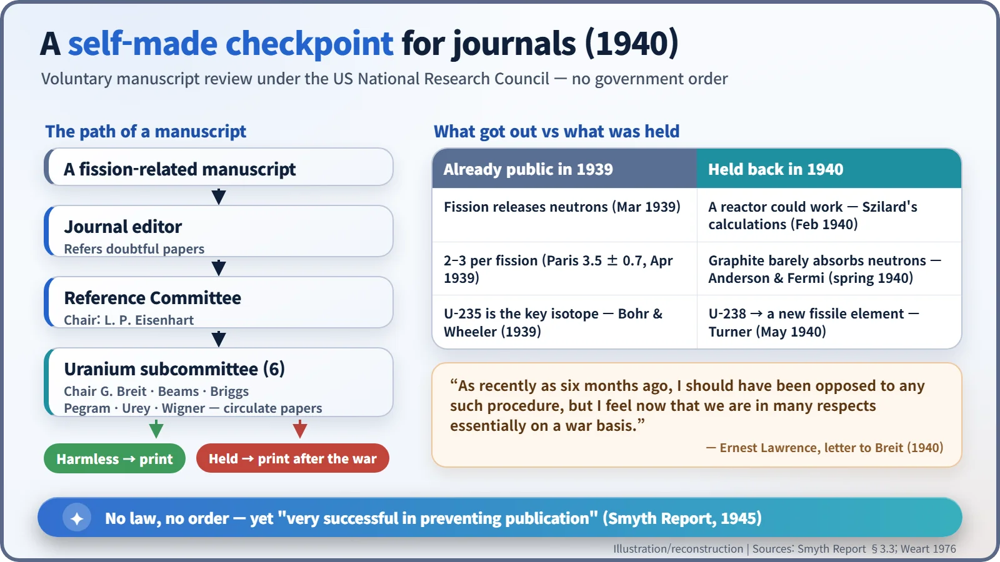

Nuclear History · 069
"Don't Publish" — Leo Szilard's Campaign for Voluntary Secrecy (1939–1940)
A letter, a cable and a curt reply from Paris: the first time scientists tried to keep their own discovery out of print.
In the spring of 1939, Leo Szilard tried to persuade physicists in America, Britain, France and Denmark to stop publishing new results on uranium fission, for fear that Nazi Germany would learn how to build a bomb. Frédéric Joliot in Paris refused, and the first attempt collapsed. A year later, American physicists set up their own voluntary review committee and the fission papers fell silent.
"QUESTION STUDIED MY OPINION IS TO PUBLISH NOW REGARDS JOLIOT."
Ten words in a cable from Paris to New York, sent in early April 1939. For Leo Szilard (1898–1964), they were the sound of two months of effort falling apart. He had wanted one simple thing: that for a while, nobody would print new results on uranium fission. [1]
Shushing a profession built on shouting
Science runs on publication. Whoever prints first gets the credit, and everyone else can check the work and build on it. But when news of uranium fission reached the United States in January 1939, Szilard ran a very different calculation. If a splitting nucleus released more than one neutron, a chain reaction was possible, and so perhaps was a bomb. And physicists in Nazi Germany could read the journals just as easily as anyone else.
It was an old worry for him; years earlier he had even asked for his chain-reaction patent to be kept secret. At Columbia University, though, Enrico Fermi (1901–1954) was unimpressed. According to Szilard's own recollection, Fermi's answer was one word: "Nuts!" Both men wanted to be cautious. As Szilard later put it, "Fermi thought that the conservative thing was to play down the possibility … and I thought the conservative thing was to assume that it would happen and take all the necessary precautions." [1]
A letter, a delay and a cable
On 2 February 1939 Szilard wrote to Frédéric Joliot (1900–1958) in Paris. In essence, he said that if fission released several neutrons, bombs might follow that would be extremely dangerous, particularly in the hands of certain governments; some scientists in New York were therefore discussing whether to stop publishing on the subject, and he might send a cable in a few weeks. Joliot and his colleagues Hans von Halban and Lew Kowarski never replied. On 18 March their note showing that fission releases neutrons appeared in Nature. Kowarski later testified that the Paris team "considered that probably the whole idea was abandoned. We simply published." [1] [3]

At Columbia, Fermi's group and Szilard's own experiment with Walter Zinn had found the same thing. On 16 March, the day after German troops marched into what remained of Czechoslovakia, both teams sent papers to the Physical Review. Three days later Szilard and Edward Teller pressed hard for secrecy. Fermi disliked the idea, but, in Szilard's telling, he agreed that "after all this is a democracy," and the journal was asked to hold the papers. [1] [5]
On 31 March a cable went to Halban, signed by his friend Victor Weisskopf (1908–2002). It proposed that papers be sent to journals as usual, so that priority was recorded, but that "PRINTING BE DELAYED UNTIL IT IS CERTAIN THAT NO HARMFUL CONSEQUENCES TO BE FEARED", with results circulated in manuscript among cooperating laboratories in America, England, France and Denmark. In Britain, P. M. S. Blackett and John Cockcroft agreed to back the plan. Niels Bohr, then visiting the United States, doubted it would matter but went along. [1] [2]


Why Joliot said no
The first reply came around 5 April: "PROPOSITION OF MARCH 31 VERY REASONABLE BUT COMES TOO LATE." The French had learned that an American science news service had reported neutron work at another laboratory on 24 February. When Szilard asked once more, the curt cable at the top of this story came back; the historian Spencer Weart dates the final exchange to 7 April. [1]
It would be unfair to cast Joliot simply as the man who wrecked the plan. Weart, drawing on the Paris papers and later interviews, lists his reasons:
- Joliot believed in the international fellowship of science and disliked secrecy on principle.
- Holding back would mean losing priority and, with it, the funding his team needed.
- He doubted that everyone would keep an unprecedented pact pushed, as far as he could tell, mainly by two refugee physicists.
- Like Fermi and Bohr, he thought a bomb was a remote prospect, because it seemed to require tons of natural uranium.
The Columbia papers duly appeared in the 15 April issue. On 22 April Nature published the Paris team's estimate of 3.5 ± 0.7 neutrons per fission (the modern value for U-235 split by slow neutrons is about 2.4). Weart judges that this paper helped push Britain, Germany and possibly the Soviet Union into government-backed research. [1] [4]
1940: physicists build their own checkpoint
When war broke out in September 1939, French, German and British scientists stopped publishing on fission, but in the neutral United States the papers kept coming. Szilard did what was in his own power. In February 1940 he sent the Physical Review his calculations on a uranium reactor and asked that printing be delayed. He then urged that a new measurement, showing that graphite absorbs very few neutrons, stay unpublished. Fermi lost his temper, but George Pegram, who ran the Columbia physics department, finally asked him to keep it secret. In late May a manuscript by Louis Turner of Princeton, predicting that uranium-238 would turn into a new, fissionable element (the idea behind what became plutonium), was also held back. [1]
The turning point came in spring 1940. According to the Smyth Report, the official 1945 US account, Gregory Breit (1899–1981) proposed a censorship committee for American scientific journals at the April 1940 meeting of the National Research Council's Division of Physical Sciences. The resulting "Reference Committee", chaired by L. P. Eisenhart, covered every field of possible military interest. Breit chaired its uranium subcommittee. Editors sent doubtful manuscripts to him, he circulated them among the members, and the editors were told whether to print. After a paper on the discovery of neptunium appeared on 15 June and drew protests, including from Britain, the system tightened. [2] [1]
"As recently as six months ago, I should have been opposed to any such procedure," Ernest Lawrence wrote to Breit, "but I feel now that we are in many respects essentially on a war basis." There was no law and no government order, yet the Smyth Report called the arrangement "very successful in preventing publication." [1] [2]

| Subcommittee on uranium (1940) | Members |
|---|---|
| Chair | Gregory Breit |
| Members | J. W. Beams, L. J. Briggs, G. B. Pegram, H. C. Urey, E. Wigner |
| Parent body | Reference Committee of the National Research Council, chaired by L. P. Eisenhart |
Silence speaks too
How much all this achieved is still debated. Many key facts were already public in 1939, and the disappearance of fission papers from Western journals was itself a clue. In 1942 the young Soviet physicist Georgy Flyorov wrote to Stalin pointing to exactly that conspicuous silence. [6]
Even so, this was the first time the scientific community deliberately suspended its own rule of openness, a dilemma that echoes in today's debates over "dual-use" research. Meanwhile, in the summer of 1939, Szilard had knocked on a much bigger door: a letter to the US president bearing Albert Einstein's signature. That story comes next.